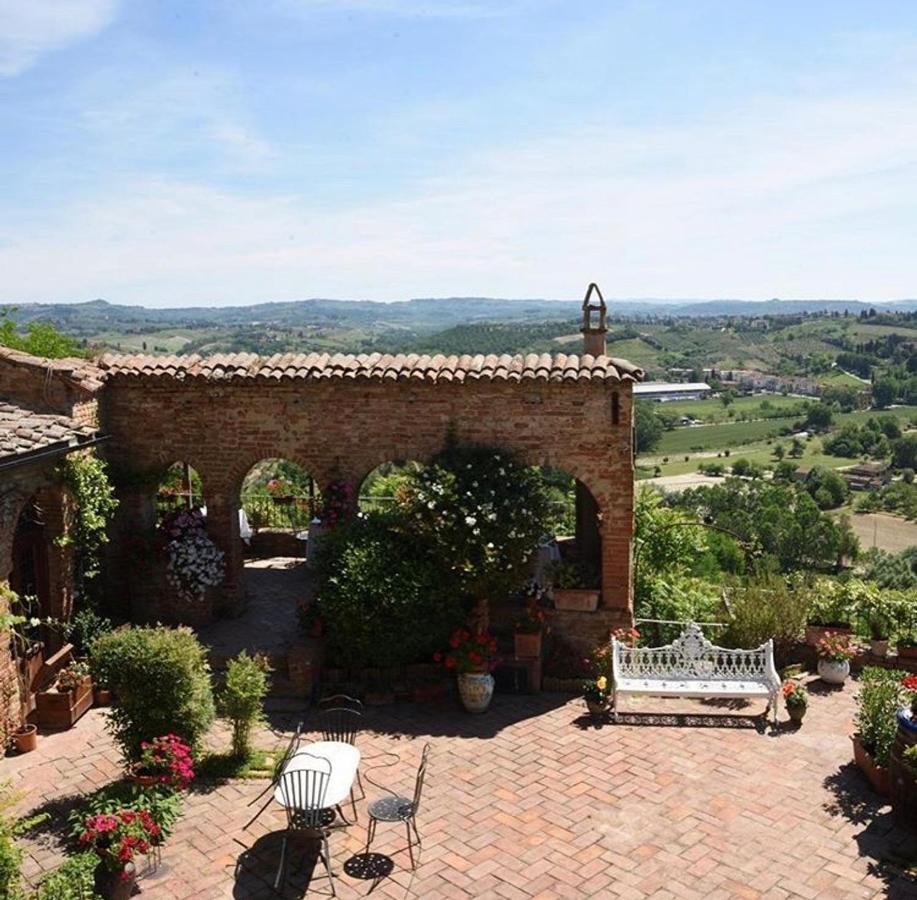
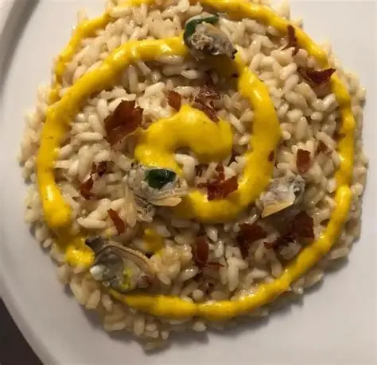
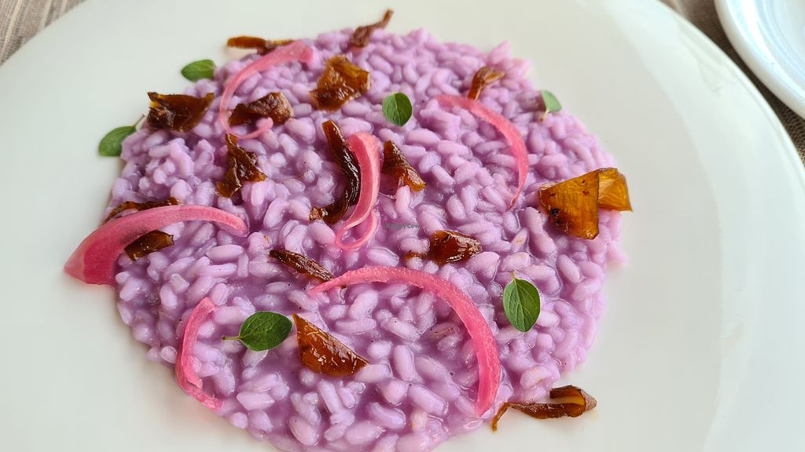
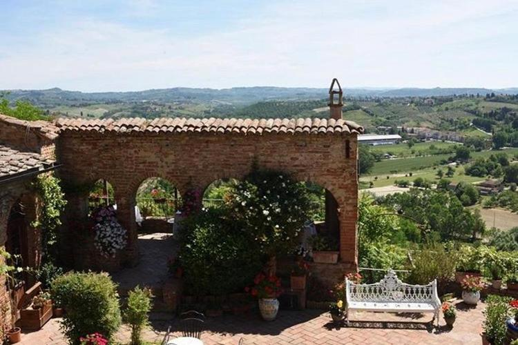
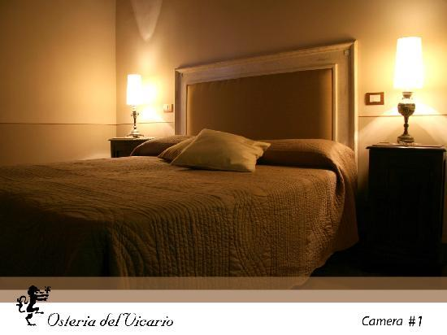
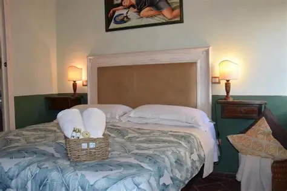
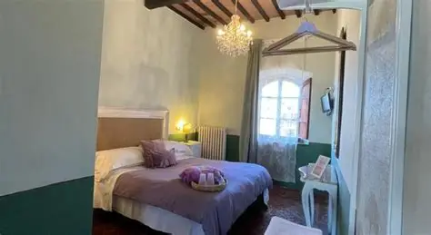

Cucina vegetale d'autore e B&B in un monastero del 1100, sopra le colline della Val d'Elsa e le torri di San Gimignano.
La nostra tradizione è non essere tradizionali.
Lavoriamo esclusivamente verdure, legumi ed erbe stagionali: non una scelta di tendenza, ma un modo di reinterpretare la tradizione toscana partendo dall'orto. Il percorso degustazione cambia con le stagioni, mai due volte uguale.
Scopri il menu degustazione

Ogni piatto, un atto creativo.

L'edificio nasce come monastero nel 1100, nel cuore di Certaldo Alto — il borgo medievale dove nacque Giovanni Boccaccio. Mura in pietra, archi del cortile interno e soffitti a volta sono stati mantenuti con interventi minimi e rispettosi della storia del luogo.
L'edificio nasce come monastero, con il cortile interno e le celle che oggi accolgono gli ospiti.
I padroni di casa portano la cucina vegetale contemporanea dentro le mura antiche del borgo.
Un'osteria e un B&B che custodiscono la pietra del 1100 e reinventano la tavola toscana.
Le camere occupano le celle dell'ex monastero: comfort moderno dentro mura di pietra del 1100. Il risveglio è sulla Val d'Elsa.



"Un luogo che non ti aspetti: pietra del 1100 e una cucina vegetale sorprendente. La terrazza al tramonto vale il viaggio." — TripAdvisor
"Abbiamo dormito in una vera cella di monastero e mangiato uno dei migliori menu degustazione vegetali in Toscana." — Google Recensioni